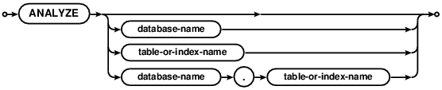

Choose any three.
|
|
SQLite里的SQL
SQL As Understood By SQLite
ANALYZE

ANALYZE命令用于获取数据库中表和索引的统计信息，然后将收集到的信息存储在数据库的内部表中，查询优化器可以通过访问这些数据来做出更优的查询计划。如果没有指定参数，那么会分析所有的附加库。如果参数中给定一个数据库名，那么会分析该数据库中所有的表和索引。如果参数是一个表名，那么只会分析指定的表和该表上的索引。如果参数是一个索引，那么只会分析这一个索引。
The ANALYZE command gathers statistics about tables and
indices and stores the collected information
in internal tables of the database where the query optimizer can
access the information and use it to help make better query planning choices.
If no arguments are given, all attached databases are
analyzed. If a database name is given as the argument, then all tables
and indices in that one database are analyzed.
If the argument is a table name, then only that table and the
indices associated with that table are analyzed. If the argument
is an index name, then only that one index is analyzed.
默认实现中会将所有的统计信息都储存在一个名为"sqlite_stat1"的表中。如果SQLite编译时使用了SQLITE_ENABLE_STAT3选项并且没有使用SQLITE_ENABLE_STAT4选项，那么额外的直方图数据会收集并存储在sqlite_stat3表中。如果SQLite编译时加入了SQLITE_ENABLE_STAT4选项，那么额外的直方图数据会收集并存储在sqlite_stat4表中。老版本的SQLite如果编译时添加了SQLITE_ENABLE_STAT2选项，则会使用sqlite_stat2表，但是所有近期的SQLite版本都会忽略sqlite_stat2表。未来的优化可能会使用类似的命名格式来创建新的内部表，只不过表编号会大于"4"。所有的这些表都被称为“统计表”。
The default implementation stores all statistics in a single
table named "sqlite_stat1". If SQLite is compiled with the
SQLITE_ENABLE_STAT3 option and without the SQLITE_ENABLE_STAT4
option, then additional histogram data is
collected and stored in sqlite_stat3.
If SQLite is compiled with the
SQLITE_ENABLE_STAT4 option, then additional histogram data is
collected and stored in sqlite_stat4.
Older versions of SQLite would make use of the sqlite_stat2 table
when compiled with SQLITE_ENABLE_STAT2 but all recent versions of
SQLite ignore the sqlite_stat2 table.
Future enhancements may create
additional internal tables with the same name pattern except with
final digit larger than "4".
All of these tables are collectively referred to as "statistics tables".
统计表中的数据可以使用SELECT来查询，或者使用DELETE、INSERT和 UPDATE命令来修改。从SQLite3.7.9开始可以对统计表使用DROP TABLE。不能在统计表上使用ALTER TABLE。当修改统计表数据时需要特别小心，因为错误的内容会导致SQLite选择低效的查询计划。通常来说，除了使用ANALYZE命令，其它任何途径都不应当修改统计表的内容。更多详细信息参见"使用SQLITE_STAT表来人工控制查询计划" 。
The content of the statistics tables can be queried using SELECT
and can be changed using the DELETE, INSERT, and UPDATE commands.
The DROP TABLE command works on statistics tables
as of SQLite version 3.7.9.
The ALTER TABLE command does not work on statistics tables.
Appropriate care should be used when changing the content of the statistics
tables as invalid content can cause SQLite to select inefficient
query plans. Generally speaking, one should not modify the content of
the statistics tables by any mechanism other than invoking the
ANALYZE command.
See "Manual Control Of Query Plans Using SQLITE_STAT Tables" for
further information.
当数据库中的内容发生变化时ANALYZE生成的统计信息不会自动更新。如果数据库中的数据发生了较大的变动，或者数据库表结构发生了变动，那么就需要考虑重新执行ANALYZE命令来更新统计信息。
Statistics gathered by ANALYZE are not automatically updated as
the content of the database changes. If the content of the database
changes significantly, or if the database schema changes, then one should
consider rerunning the ANALYZE command in order to update the statistics.
当数据库结构被读取时查询计划器就会将统计表中的所有内容都加载到内存中。因此，如果应用直接修改统计表，SQLite是不会立即发现改动的。应用程序可以通过运行ANALYZE sqlite_master来强制查询计划器重读统计表。
The query planner loads the content of the statistics tables
into memory when the schema is read. Hence, when an application
changes the statistics tables directly, SQLite will not immediately
notice the changes. An application
can force the query planner to reread the statistics tables by running
ANALYZE sqlite_master.